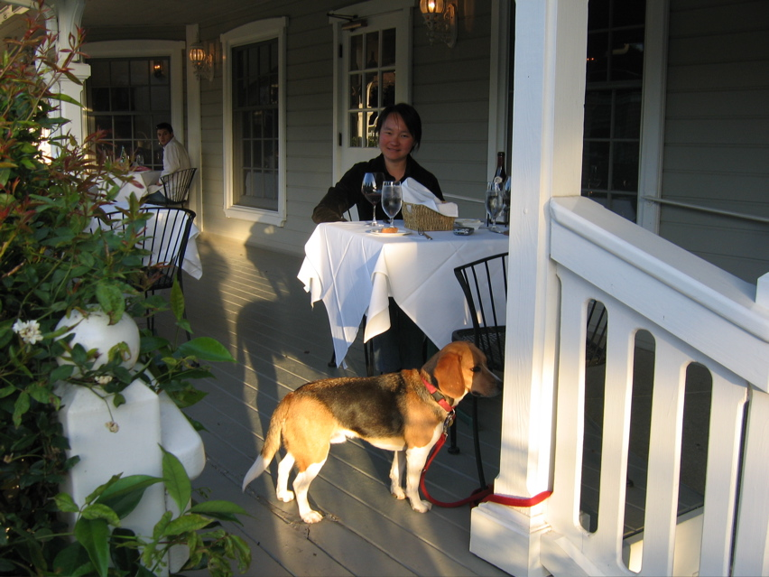

<--Previous
Up
Next-->

The Ballard Inn
The humans and the beagle both had their best dinner of the trip on the porch at the Ballard Inn -- Huxley because he got the bones from Penny's rack of lamb.